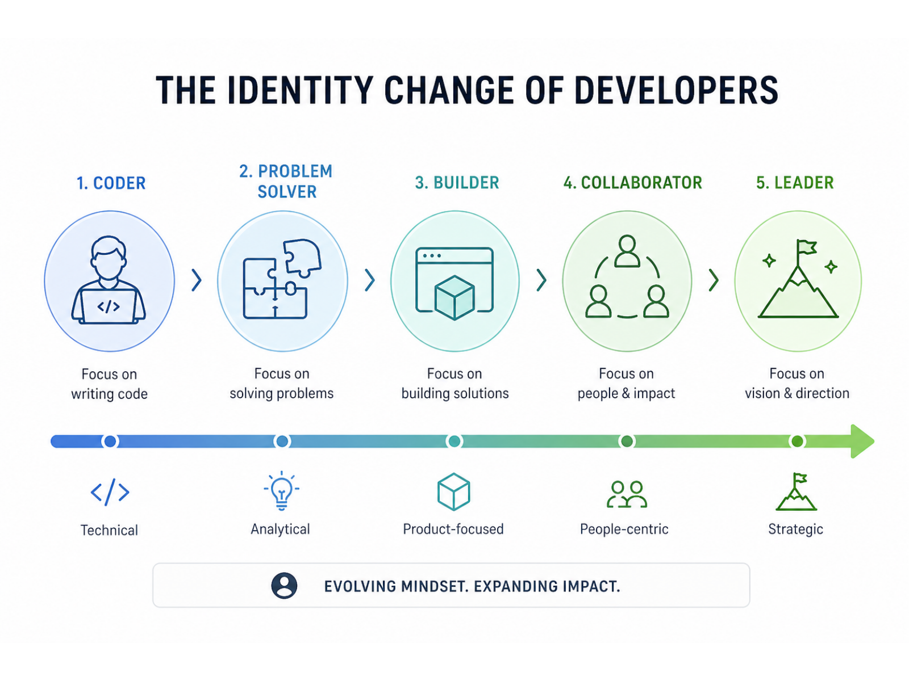

“See, this advertisement is made of AI, isn’t that interesting?” said Professor Randy Harrison during his Marketing and Marketing Communication class at Emerson College in the U.S., showing an AI-generated ad of a woman promoting a music app.
The students’ reactions were quiet. Instead of cheering or looking surprised, they frowned. Some giggled in disbelief.
“I don’t think I have learned anything useful in this class,” said Lena, a freshman majoring in Marketing Communication at Emerson. “It’s a whole course on talking to AI.”
“I don’t use AI because I think it’s depriving my creativity,” said Norah Lesspeern, a Journalism student minoring in Marketing.
On the other side of the earth, AI is also taking over the classroom. In Hong Kong, Nick Zhang is teaching a new course called “Generative AI-Assisted Reporting,” which introduces large language models and AI into the journalism reporting process.
It’s no longer a surprise that AI has become part of university students’ lives right now.
According to the latest 2025 data, 66% of people use AI regularly. Among all age groups, younger demographics have embraced AI tools with remarkable enthusiasm: 76% of adults aged 18–29 have used AI tools, compared to just 6% of those 65 and older. On university campuses, over 80% of students have used AI in their everyday lives, according to the Chegg Global Student Survey.
AI Adoption by Age Group
Younger users have integrated AI into everyday life far more deeply than older generations.
Data source: The Global Statistics, “Artificial Intelligence (AI) Usage Statistics.
Globally, the numbers vary by country. The United States has the largest absolute user base: 179 million active users. China presents a unique case, with 250 million users on domestic platforms like Quark AI and DeepSeek, operating in a separate ecosystem due to ChatGPT being blocked.
This is the story of the first AI-native generation in college: students who came of age as artificial intelligence shifted from a tool into an environment. Around them, the conversation is loud and unsettled: the concern of controlling, the fear of replacing, and the excitement of adapting. The impact of AI brings an ever-present uncertainty. How do these first AI-native young people respond? How do they cope? Through their voices, one generation captures an age.
The Moment That Changes Everything
Before ChatGPT emerged, Wang Yifan was still writing hundreds of codes through her hands.
Graduated from Fudan University with a degree in Information Security and now a graduate student in Artificial Intelligence at the University of Hong Kong, Yifan jokes that she used to write code the “classical, handmade way.”
In her freshman year, she found learning neural networks as a “painful” experience.
“The level of uncertainty is so huge,” said Yifan. When conducting data analysis, she cannot have absolute control over the results of the experiment as in ordinary computer languages. Each time, the outcome can suddenly improve or deteriorate.
“I have to wake up every four hours to check the results. If the results are bad, you need to adjust the parameters and run it again. So at that time, I hate it,” she said.
Back then, AI had no “Chat”, there is only a “black box.” There were too many parameters for humans to understand. During training, the model could “explode” or “vanish” at any moment. “Everything would be going fine for a few moments, and suddenly it would just blow up. No one knew why.” That’s why everyone called it “alchemy（炼丹）.”
“It felt like the Industrial Revolution. The way we learn has been completely reshaped.”Yifan
On November 30, 2022, OpenAI publicly launched ChatGPT, a chatbot free for everyone.
Built on GPT-3.5, it wasn’t just a simple “chat program.” It was the first generative AI that could converse naturally in everyday language and actually help with real-world tasks. It could handle multi-turn dialogues, answer questions precisely, and generate code, emails, essays, novels, almost any text-based task you threw at it.
Within days, the servers were overwhelmed. Screenshots of AI-written essays, AI-generated code, and AI-scripted dramas flooded social media. Two months later, ChatGPT had surpassed 100 million monthly active users, faster than TikTok, faster than Instagram. The fastest in internet history.
For the general public, it felt like technology had suddenly crashed into everyday life. Some had it write love poems. Others asked for cover letters. Many just copied and pasted their coding problems and let AI fix them. For the first time, people realized that by simply stating what you wanted, the machine could create something coherent on its own. Excitement, but also a quiet unease.
Tech giants were shaken. Google declared a “code red” internal response. Soon after, Microsoft announced a $10 billion investment in OpenAI. Headlines blared: “Will ChatGPT Kill Google Search?” and “AI Will Change the Entire Internet.”
Before that, she jokes that she lived in an “era without large language models”, during math modeling competitions, she had to write every line of code by hand, with no one to ask for help. When something went wrong, she could only stare at the screen in silence. “It was a tough life,” she says with a laugh.
Now the game has completely changed. Code that used to be out of reach for many can now be generated directly by AI. Not only does it write the code, but it can also provide various model ideas and solutions. In competitions now, it’s no longer about whether you can write it, it’s about whether your thinking is right.
She adds: you knew the AI wave was unstoppable. If you resist, you’ll just be swept aside. Besides, AI is actually an effective way to solve many problems.
Yifan wasn’t the only student who felt the shift.
Linda Lam graduated from Hong Kong Baptist University with a degree in English Language Education. At the end of 2022, right after ChatGPT first launched, she got access through a university-provided overseas account, making her one of the very first users.
“At the time, you still needed U.S. IP verification. It only became widely available later with Poe.” The first time she used it, she just chatted with it for fun. Only later did she start feeding it her homework.
She pasted a question into ChatGPT, and the answer it gave back was 80 to 90 percent accurate, enough to get a B+ and get by. Especially for those general education assignments: short-answer questions, long-answer questions, even short essays. If she had done them herself, she could have reached the same level, but AI was so much faster. Before, she had to slowly search for information and piece things together. Now, she just threw the question in, and the answer came out.
The first time she saw what AI could generate, one thought crossed her mind: “All those homework assignments I used to do, they feel so meaningless now. There’s no point in keeping them. AI can do all of it anyway.”
What felt even more absurd to her was class group discussion. “Discussing with AI,” she says, “is more productive than discussing with them. They don’t know as much as AI does.”
Excited, she ran to recommend it to her classmates. No one believed her.
“They not only doubted the AI, they doubted me,” Linda says with a smile. “Some people even looked down on me for asking AI everything, saying I wasn’t using my brain.”
“Honestly, I had my doubts too when I first encountered something new.” When she first heard about ChatGPT, her immediate reaction wasn’t “this is going to change the world.” It was, “Another shiny but useless thing.”
What they didn’t know was that an era had already turned. It’s just that most people were still living on the last page.
Re-shaped Life: From Tools to Environment
“I feel like I’m being lifted by AI. It has become my external brain.”Remi Liang
She is a senior at Hong Kong Baptist University, studying data and media communication. When she started university as a sophomore in 2023, she thought AI was “pretty dumb.” “Back then, AI just felt like an idiot. No deep-thinking mode, and it couldn't even meet the requirements,” Remi recalls. “Writing assignments was still painful. For a 1,000-word essay, I would stay the library for one week.”
In early 2023, Hong Kong's universities embarked on a sharp policy reversal regarding AI tools. The University of Hong Kong led the initial caution by becoming the first in the city to publicly ban ChatGPT in February, citing concerns over academic integrity.
But just months later, HKU’s Senate endorsed a generative AI policy in June 2023, declaring AI literacy the “fifth literacy” that students must possess alongside reading, writing, numeracy, and critical thinking. That summer, other Hong Kong universities also moved from restriction toward permission or limited approval, including HKUST, HKBU, Lingnan University, and so on.
For Remi, the moment her life began to reshape, didn't come from the university announcement. It came from a class assignment.
“Wow! Things that used to take me this long suddenly got done so fast.”
The first time Remi truly realized what AI could do was during a marketing class project. She needed to create a set of campaign visuals for the Hong Kong Guide Dogs Association. “It was way too complicated. We didn't have dogs, and we would have had to hire actors,” she says. “So I chose to use AI.”
She used Midjourney to generate a dozen images. The result was impressive. “That was my real wow moment.” For just a few dollars, buying access via Taobao, she replaced hiring actors, renting equipment, and post-production. Both cost and time were compressed to the extreme.
Launched in 2022 on Discord by David Holz, Midjourney turns simple text prompts into stunning, artistic images and was already a go-to by then. In 2024, Midjourney generates 12 million images per day, and its users grew from 16 million in 2023 to over 19 million on Discord, and generated $300 million in revenue.
Source noted in article: wifitalents.com/midjourney-statistics
2024 also happened to be a year of technological leaps. In February, OpenAI released Sora for video generation; in March, Adobe launched Firefly for design workflows; in June, Apple unveiled Intelligence for Siri translation, photo editing, and math solving.
People use AI for far more than homework. Surveys show top uses include responding to emails/texts (45%), financial questions (43%), and travel planning (38%) from National University data, plus creative writing (21%) and work tasks (15%) per Master of Code.
Source noted in article: nu.edu/blog/ai-statistics-trends
AI also went from being a tool to being around Remi’s life.
First, AI moved into her assignments. Essays that took a week now took two evenings. “I'm not constantly on edge anymore,” she says. “Starting something became easier.”
Then it moved into her workflow, generating paragraphs, organizing multiple documents, mimicking specific writing styles.
Then it moved into her emotions. When she's overwhelmed, she doesn't want to burden friends. She turns to AI. “Late at night, when I feel like saying something spontaneously, I just open Doubao. ‘What do you think I can do?' It gives me clear, rational answers. If you think of it as medicine, it’s the one with zero side effects.”
Finally, it moved into her family. This past Spring Festival, she recommended AI to her mom. Her mom asked it, “Can you guess how old I am?” The AI responded with sweet, flattering things.
Remi now calls AI her “external brain”.
“It has saved me an enormous amount of time. Now I can spend that time doing what I actually want, working out, cleaning, watching movies. I never would have imagined that before,” she says. “I used to think AI was dumb. No way I'd confide in it. But now?”
“It gives me moments when I feel truly alive.”
Unlike Remi, Tina was anxious at first.
Tina is a Ph.D. student at the Chinese University of Hong Kong, working in medical data analysis. “Writing code and running pipelines, that's the kind of thing that's easiest to automate,” she says. Back then, she worried about losing her job.
But AI helped her labmate fill a gap in coding skills. Her labmate had great ideas but weaker hands-on abilities, AI bridged that gap. That's when Tina realized: when execution is no longer the bottleneck, having good ideas becomes critically important.
She started using AI more deeply.
“Discussing things with AI cuts the time I spend searching through information and academic articles. That has really improved my focus,” Tina says. “When I have a research idea, I talk to it. It gives me a plan. Then I evaluate it.”
Before, she wasn't very good at transferring insights from one paper to another. Now, AI shows her how a certain paper's approach could apply to her own work. “That really opens up my mind. Going from 0 to 1 is hard for me. But from 1 to 3? That's easy. AI helps me with that step.”
She feels like she has become the “captain of the ship.”
“You have to be the one in control. You can’t just let AI lead you by the nose.”Tina
“If I haven't read other people's work, I can't tell whether what AI wrote is any good.”
She has a “half-glass-of-water” theory: “Some people see that half-empty glass and think, ‘I'm going to be replaced.’ They give up. The other mindset is to use it as a tool. Learn from it. Use it to become better yourself.”
AI does frustrate her sometimes, when writing proposals, it can be vague and grandiose, inventing words, sounding obviously machine-generated. She tells it to lower its tone, to swap out phrases she doesn't like.
But she is no longer anxious about being replaced.
Human Intelligence or Artificial Intelligence?
The shift in technology is changing not just how we do things, but seeping inward, rewiring our habits of thought, redefining what ability means, and quietly reshaping our sense of self-worth.
As a junior Applied Math student at Harvard, Burnie Legette began to notice a change. He might be losing the ability to “think”.

In the past, facing a proof problem, he would have pushed himself through every step, scribbling calculations back and forth, spending hours coping a complex question. But now, whenever his thinking stuck, he would simply open a dialog with ChatGPT.
“I can go through STEM classes and walk away not having learned how to execute much, because I relied on AI for assignments.”
In his proof-based math courses, reasoning used to be the core of the craft. But now, because of AI, he could feel his critical thinking and reasoning abilities are becoming “not as strong as I would like”.
Burnie noticed he wasn't alone. In his math and CS classes, as students were relying on AI tools, professors had observed a significant drop in office hours attendance. In one course, the midterm average fell twenty points from the previous year.
“I think that's partially because people aren't internalizing the information,” said Burnie.
Burnie's concern wasn't unfounded. Multiple studies have shown that generative AI is quietly reshaping how people think.
A 2025 international survey from the University of Southern California found that in higher education, most students use AI for “executive help”, getting quick answers with minimal effort, rather than truly understanding the material.
Research from the MIT Media Lab pointed in the same direction: students who relied heavily on AI for writing showed significantly lower brain activity and neural connectivity compared to those who completed tasks on their own, suggesting that AI may be reducing the mental effort required for deep thinking.
In that study, 54 students were divided into three groups. One group wrote essays using ChatGPT. Another used only Google search. The third relied on no tools at all, just their own minds. Over three months, each student wrote three 20-minute argumentative essays.
The results were striking. Students who wrote entirely on their own showed the strongest brain activity. Those who used Google search fell in the middle. And the ChatGPT-dependent group showed the weakest brain activity, the more they relied on AI, the less their brains seemed to work.
Burnie felt frustrated and lost.
“I'm not sure it's made me a better writer or a better thinker,” he said. “I think it's better to struggle, do the research, and learn to program from the ground up.”
But while some students had begun to worry about whether they were still thinking, others were facing a deeper question. Not whether their thinking ability had been weakened, but rather, what thinking itself was even for anymore.
At Hong Kong Baptist University, Vishal Ginni, a math major with a minor in FinTech, had once been deeply confident in his own abilities.
Before university, he had already taught himself to code, reading technical documentation and online resources, piecing together his own knowledge base from the ground up. He had joined hackathons, collaborated with CS students on projects.
In his eyes, his understanding of system architecture and his ability to organize code put him ahead of many formally trained CS students. The ability to “see the blueprint” had once been his core advantage.
“Software development is like building with Lego,” he said. “I have the blueprint in my head. I know exactly where each piece goes.”
But as AI tools matured, that advantage began to feel fragile.
In 2025, “vibe coding” became a buzzword in tech circles. It meant using natural language to direct AI to generate code, with developers barely touching the keyboard, just prompting and iterating. A New York Times reporter used AI tools to build a functioning indie game prototype, Meatball Mania, in just a few hours, generating the entire codebase through natural language alone.
That same year, third-party analysis suggested that about 4% of public commits on GitHub could be identified as AI-generated, and the real number was likely higher.
But Ginni hadn't fully embraced AI tools. He still stuck with traditional development environments, maintaining his own codebase. He knew firsthand that large language models still tend to “break” when faced with complex tasks.
And yet, he had to admit: the amount of code he wrote by hand was shrinking. Faced with a feature, he would ask himself: Is it worth writing this myself? Or should I just let AI generate it and move faster?
“Before, I could proudly call myself a software engineer, and a good developer meant someone who knew the syntax, who had written a lot of code,” he said. “But now, practically anyone can say that. People are starting to question whether memorizing any of these codes even matters anymore.”
For years, being a “developer” meant something. It meant you had put in the hours, struggled through the bugs, earned the right to call yourself a builder. But now that title felt up for grabs. Anyone with a ChatGPT account could claim it. And even if the quality was different, the distinction no longer seemed to matter to the outside world.
That realization was uncomfortable. But what came next was worse.
If being a developer no longer meant what it used to, then what did it mean? And if the world no longer needed him to write every line of code, then what was he supposed to do with his skills?
In February 2026, Anthropic released an 18-page report stating that software development is undergoing its largest paradigm shift since the graphical user interface.
The report's core conclusion shook the industry: anyone can become a developer. Programming is no longer just for professionals. Employees from legal, marketing, and operations can now build software with AI agents. The barrier is collapsing.
Programmers are being redefined. Building software no longer means writing code. Engineers are shifting from “coders” to “conductors”, evaluating AI output, providing direction, and ensuring the right problems get solved. Anthropic calls this new role the “AI conductor.” Those who only code are being phased out, while those with architectural and strategic skills are becoming more competitive.
“I know how to build things. But I don’t know what to build anymore.”Vishal Ginni
In his mind, development had always been about solving problems. But when he started seriously looking for problems, he found that most needs were already met, or weren't really valuable to begin with. A lot of projects looked “cool,” but would anyone actually pay for them? Would anyone truly miss them?
“People pay for things they can't live without,” he said. “Like the internet. Like ChatGPT now. But a lot of what we build, it's not that.”
He didn't want to manufacture false necessity, to convince people through marketing and packaging that they needed something they didn't. That made the question of what to build far harder than how to build it.
In an era where generative AI can already generate code, spin up prototypes, and even handle basic product design, the barrier to building has collapsed. An idea can become a working app in days, only to be abandoned or replaced just as quickly.
“We can make something really fast now,” he said. “But then what?”
The industry heard that voice.
Marc Hamilton, Vice President of Solutions Architecture and Engineering at NVIDIA, responded. “Please, keep studying computer science,” he said. “No AI is going to say, ‘Please write the AI code for the next chip.’ That won't happen within the students' lifetimes.”
But Hamilton also acknowledged that the role of software engineers is shifting. “The job for many computer scientists was to work with other experts to write the software for them,” he said. “Now, for the first time in history, anyone can write software. The role is shifting to ‘whether you understand the system.’”
He offered an analogy: “It's like an airplane. A lot of it is on autopilot, but you always need a pilot. You need a human's fast thinking and reaction skills to steer to safety.”
To Use or Not to Use, that's a question
At Emerson College, there is an unwritten rule.
“People don't want to admit they use AI because it's embarrassing,” said Norah, a junior majoring in Journalism and minoring in Marketing. “Especially at Emerson where it's so creative-heavy.”
She told a story about a girl who joked about using ChatGPT to write an essay. The whole room went silent. No one laughed.
“It's like a ‘badge of honor’ here to do things yourself and preserve your ability to think critically.”
Norah is a writer. A creative person. And she tries to stay away from AI.
“It's a little scary to me that AI can have a ‘human voice’ and create quote-unquote ‘art,’” she said. “The process of writing and making art is so important to me and to many people, and it scares me that the process can be shortened in that way.”
As someone who publishes her work online, she also worries about copyright.
“AI could scrape my work from anywhere, even the stories I wrote for journalism class. It's weird and scary that someone could ask AI to ‘show me something Norah wrote’ and it could just pull it.”
It was finals week when we spoke. She had a lot due.
“I know I could ask AI to write a draft for me, but I don't want to. I feel proud of myself when I go through the actual process of doing the work. If I asked AI to do it, I wouldn't learn anything. College is expensive; I'm paying to be here to gain these skills, even if AI takes over some of them later.”
But the fear of AI, for some students, goes far beyond creativity.
“I want to talk about data centers,” said Elizabeth, a second-year student at New York University majoring in Forensic Psychology and planning to minor in Art.
She learned a concept in a science course last year: environmental racism.
“In Memphis, Tennessee, neighbors around a data center have reported that they can no longer open their windows because the air has become so toxic. I feel that as AI grows, conditions will only get worse for people in low-income areas.”
Norah felt the same chill.
“I read about a community in Tennessee where an AI processing plant negatively impacted the air quality, making it harder to breathe,” she said. “It reminds me of when they used to mine coal in West Virginia, leading to generations of lung cancer. It feels like we're repeating old cycles.”
Elizabeth stopped using AI at the beginning of her second year.
“I realized I was relying on it too much,” she said. “I wasn't using my full ability to write or develop my own ideas.”
Art has always been a big part of her life. She has been drawing since she was little.
“AI damages artists by taking their unique styles and recreating them,” Elizabeth said. “This often leads to situations where people are accused of using AI for work they actually hand-drew themselves. Twitter enabled a feature on every post that allows AI to edit things. This has caused many artists to leave the platform.”
She said it has gotten to the point where she has to look very closely at details to see if something is human-made or AI.
“It's sad because so much art was fed into AI without the artists' consent. Most people can't tell the difference, so they naturally favor AI because it can produce ‘difficult’ images in seconds without the need to commission a human.”
But she also acknowledged that some things AI still cannot recreate perfectly.
“Architecture, item designs, clothing, or the storytelling and specific drawing styles in animated shows, there is still value in human creation.”
When asked what she values most when choosing whether to use AI, Elizabeth gave a two-part answer: “How much water is being used, and how it is damaging the air people breathe.”
For Aubrey, a first-year at Harvard planning to major in Biology, the problem is different. She thinks people have misunderstood where AI belongs in the first place.
“Generally, I try not to use AI where it doesn't seem like it would actually do anything for me,” she said. “But I feel like people heard ‘AI,’ misinterpreted what it means, and just ran with it before fully understanding what it could be most useful for, which is data tasks and monotonous work.”
She worked in a blood pathology lab during clinicals.
“There are these cells called blasts or hemoblasts, and seeing them usually means the person is close to death. I've heard people talk about using AI to recognize those because they are very hard to identify unless you have a lot of experience. I think recognition and data work are things AI could be good for. But for creative jobs or trades, careers people have spent their entire lives mastering, I don't think AI can or should help there.”
She wants to be a medical illustrator. The person who draws the pictures for anatomy textbooks.
“That job has already been replaced a lot by AI image generation. The AI versions are worse and often anatomically incorrect, but I've seen AI images in textbooks anyway. It's unbelievable how fast it's happening.”
But she hasn't given up.
“I'm between that and medical school. If it's something I find I really enjoy as I learn more, I'd probably still go for it. If you're really passionate, you'll find a way to do it no matter what.”
Her last sentence felt like a footnote to the entire era.
“I just hope that as people learn more about AI, they use it in ways that are beneficial for humanity instead of just for monetary gain.”
But while students wrestled with whether to use AI at all, their professor, Randy Harrison, had already moved past that question.
Randy is a professor of marketing communication at Emerson College and one of the first educators to bring AI into the classroom. The day after ChatGPT was released in 2022, he had his students try using it for information retrieval tasks.
“Some students hated it. They were scared,” he said. “But I believe when something disruptive and potentially wonderful comes along, we have no choice but to experiment with it.”
For him, “to use or not to use” was never the real question. The real question was: how to use it.
Randy distinguishes between two ways of using AI.
One is taking shortcuts, letting AI do the writing, the creating, the thinking that should come from your own mind. “That's a mistake,” he said. “If you use it to replace your gifts, you just get ‘AI slop.’”
The other is using AI to support and amplify your gifts. “You have to be under your own control, not the tool's control,” he said. “You have to query it, iterate it, frame it. The more you put in, the more you get out.”
He remembers one team whose initial submission was very rough. He gave them feedback, and a week later, their output was astonishingly good.
“They had pushed the tool to deliver, rather than just surrendering to it.”
In Randy's view, this distinction directly determines a person's competitiveness in the age of AI.
“Entry-level jobs for college graduates are changing,” he said. “Employers don't just want someone who can make social media posts, AI can do that faster. They want young people who can use these tools to deliver results. If you use AI to support and amplify your gifts rather than replace them, you're employable.”
That is why he brings AI into the classroom. Not to teach students how to use a tool, but to help them learn one thing before they enter the real world: AI can make you better, or it can make you worse. The choice is yours.
So when students ask him, “Should I use AI or not?” he doesn't give a direct answer.
“It's one thing to have an opinion,” he said. “It's another to have knowledge. I want students to play with these tools so they can make informed choices, regardless of their moral stance on them.”
Because what really matters isn't whether you use it or not.
It's whether you are in control, or being controlled.
Future Jobs?
While most of her peers were still figuring out how to ask questions to AI, Linda Lam had already turned it into a business.
Her logic was simple and direct: most people don't know how to write prompts, and that's an opportunity. For Linda, AI was the booster she used to start a business and create an information gap.
“Knowing how to use AI is itself an advantage,” she said. She grew up without internet or mobile phones before college, relying on printed reference books. Back then, when practicing for the college entrance exam, she would memorize “canned phrases” and good sentences from sample essays, then plug them into her own writing. “But now, if there's a tool that can immediately grade my essay, give an accurate score, and generate a ‘level-up’ version based on my original writing, I would find it much easier to learn. And that tool is AI.”
In her senior year, she teamed up with Tentent, a computer science student from Hong Kong Baptist University, and other classmates to develop an AI platform called Greypad, designed to grade DSE Chinese composition papers. Essentially, it was a packaged prompt system with OCR recognition, students just needed to take a photo of their handwritten essay and upload it. The platform would then provide AI grading and an upgraded sample essay. They received 30,000 HKD in startup funding from the university's “Start-up Saturday” program and successfully entered the Science Park. Today, Greypad has over 1,800 regular users per year, mainly partnering with tutoring centers to provide AI grading services for territory-wide mock exams.
“Many students coming from the mainland don't have this AI awareness,” she said. “Mastering AI means mastering 60% of the initiative in learning.”
In her view, AI is an excellent vehicle for low-cost entrepreneurship. Being a teacher means exchanging physical and mental effort for money, there's a ceiling. But entrepreneurship offers continuous returns. Clients accumulate. Teams grow. There's no end to it.
“AI has made me less worried about being an employee. Being a teacher in Hong Kong pays well and is stable, but it's the same thing day after day. Entrepreneurship makes me anxious every day because I constantly have to innovate, but it's so much more interesting.”
But she also knows the limits of AI. “AI's error rate is currently between 10% and 20%, but the margin for error in the workplace might be only 1%. AI hallucinates. It can't replace rigorous work.” She believes the most valuable skills are adaptability and emotional intelligence. A teacher faces parents and unexpected situations, student problems that fall outside AI's predictions. “AI can only tell you what mistake a student made. Only a teacher can figure out, through conversation, why they made it.”
As for the future, she has a clear timeline: “In another five to ten years, most people's understanding and use of AI will reach where I am now. To go deeper, you need coding, and that's for computer science people. So my plan is to make a bit more money in the next five to ten years promoting AI, then retire and become a housewife.”
She paused, then laughed. “My partner handles the coding. I'm not going to learn it myself.”
Yifan's situation was more complicated.
She was interning at an AI startup, but she described the experience as “tragic.”
“Every day I talk to an AI agent. I'm learning nothing. Sometimes the agent gets more and more wrong, and I don't even know where to start correcting it. It's a negative feedback loop. Because I don't understand it, I can't use AI well. When it makes mistakes, I don't know why, so I just keep talking to it until it randomly gets it right.”
She felt the internship was a bit of a rip-off. “My boss is just extracting labor from me. And I'm left wondering, what am I actually learning from talking to an AI agent every day?”
She called herself “old-school.” She didn't trust AI that much. “In my eyes, a large language model is just a probabilistic model. You can't rely on it completely. The quality of what it produces is sometimes poor, it gets things done, but not in a clean, elegant way.” So she currently works with a mix of manual and AI-assisted approaches.
But she admitted that AI was reshaping the entire industry.
“Where is the boundary of what AI can achieve as it grows exponentially? Which jobs will disappear entirely?” She noted that basic front-end work at big tech companies is already fully AI-generated. “In 2023 and 2024, as a student, you could make good money doing front-end work for others. But that logic no longer holds. Certain computer science jobs are disappearing.”
Asked how she coped with the uncertainty, her answer was honest: “There's no choice. After ChatGPT came out, you knew the AI wave was unstoppable. Resist, and you'll just be swept aside. The computer science industry is being hit hard, you have to swim upstream. And AI is truly an effective way to solve a lot of problems.”
“Don’t reject it. Embrace it. Use it. Feel it. Even the panic, that’s a real feeling too.”Yifan
The hiring market was shifting too, quietly but unmistakably.
Caridee, an HR professional in Hong Kong, watched it happen in real time. Companies had started using AI for keyword matching, and they were preferring “exact matches” over “people with potential.” The line between technical and non-technical roles was blurring. At startups, business people were using AI to write code, and technical founders were using AI to analyze markets.
“Don't be too optimistic, but don't be too pessimistic either,” she said. “Use AI to focus on what you truly value.”
But then there was Phili.
Phili was an old-school programmer, the kind who had been writing code since before most of today's students were born. And when everyone else was drawing a clean line between “humans do architecture, AI does execution,” he just shook his head.
“I feel sorry for people who think that way,” he said.
He had already started discussing architecture with AI. Letting AI give him advice. “AI's knowledge goes beyond my range.” He believed that the real skill that mattered now wasn't something you learned from a book, it was something you tried and failed at. The ability to manage someone, or something, that was better than you in every way.
“AI offers nonlinear ideas. Conversations you would never have with another human being.”
His advice was simple and brutal: “Try to use AI to replace yourself. Go all in. At least 20% of your work should be AI-driven, let AI understand your priorities.”
He admitted the process was painful. “Training AI is painful. But it's a necessary hurdle. Learning to manage AI is the direction we need to move in. You need a lot of exposure. Train AI in different environments. Use it over and over again.”
Outro
During my final semester of university, I sat down with a group of first year students and we started talking about the English course we all took as freshmen. I told them that back in my first year, AI did not exist yet. They stared at me, eyes wide with disbelief. “You sound like you're from the last century,” one of them said. “How did you even learn college English without AI?”
We laughed and joked about how different our college experiences had been. But as I laughed, a realization began to sink in: we might be the first generation of students to have AI on campus, and also the last generation to have gone through college without it.
Later, while writing HTML code for the website, I tried Codex, the desktop AI coding assistant from ChatGPT, for the first time. It generated a perfect code, but without any warning, it altered every file on my desktop, including the backup copies of my original source code. I searched through my folders, but the original files were gone. Cold sweat broke out on my forehead. In that moment, I felt for the first time that AI had crossed a line. It was also the first time I truly understood how deeply significant the changes brought by AI could be.
For today's incoming students, letting AI modify files or take control of a computer might not seem unusual. But for someone like me, someone who feels like they come from the last century, the feeling was unlike anything I had felt before. It sent a chill down my spine.
In just four short years, the AI era had stretched to a length that already felt like a century.